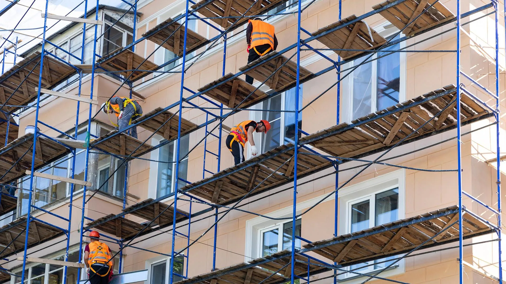

Штукатурка
Штукатурка стен, потолков и фасадов. Механизированная и ручная штукатурка по маякам, выравнивание под покраску и обои. Цементные, гипсовые и декоративные составы.

Отделочные работы выполняем после завершения общестроительного этапа или по отдельному заказу. Внутренняя и фасадная отделка: штукатурка, шпаклёвка, покраска, облицовка плиткой и камнем, устройство полов. Работаем по смете и в оговорённые сроки.
Стоимость и сроки зависят от объёма и сложности. Материалы можем поставить сами или работать с вашими — обсудим при расчёте. Для расчёта оставьте заявку или позвоните по телефону 8 (977) 682-98-13.
Штукатурка стен, потолков и фасадов. Механизированная и ручная штукатурка по маякам, выравнивание под покраску и обои. Цементные, гипсовые и декоративные составы.
Подготовка поверхностей под покраску и обои: шпаклёвка в один или несколько слоёв, грунтовка, затирка. Механизированная шпаклёвка для больших объёмов.
Покраска стен и потолков водоэмульсионными и другими составами. Фасадная покраска в один или два слоя. Подбор цвета и соблюдение технологии нанесения.
Облицовка стен и полов керамической плиткой, клинкером, керамогранитом. Облицовка природным и искусственным камнем. Затирка швов, доборные элементы.
Стяжка, наливной пол, подготовка под финишное покрытие. Укладка плитки и керамогранита на пол. Работы по проекту и с учётом нагрузок.
Штукатурка и покраска фасадов, утепление и гидроветрозащита, облицовка клинкером и камнем. Монтаж козырьков и откосов. Согласованные сроки и аккуратный вид.
Все цены указаны ориентировочно — точный расчёт выполняется индивидуально по заявке (по замерам, объёму и условиям). Ниже — ориентировочные расценки за работу без учёта материалов.
| Вид работы | ед. изм. | от, руб. |
|---|---|---|
| Штукатурка стен (до 5 мм с армированием) | кв.м | 430 |
| Декоративная штукатурка с подготовкой | кв.м | 490 |
| Шпаклевка стен основания | кв.м | 280 |
| Грунтовка стен основания | кв.м | 130 |
| Покраска фасада (1 слой / 2 слоя) | кв.м | 210 / 350 |
| Облицовка стен клинкерной плиткой | кв.м | 980 |
| Утепление, гидроветроизоляция фасада | кв.м | 280 |
| Установка и демонтаж строительных лесов | кв.м | 170 |
Полный прайс по общестроительным и фасадным работам — на странице Общестроительные работы. По внутренней отделке расчёт делаем индивидуально по заявке.
Нужен расчёт по отделке? Оставьте заявку — рассчитаем стоимость и сроки. Или звоните: 8 (977) 682-98-13.
Заявка на расчёт